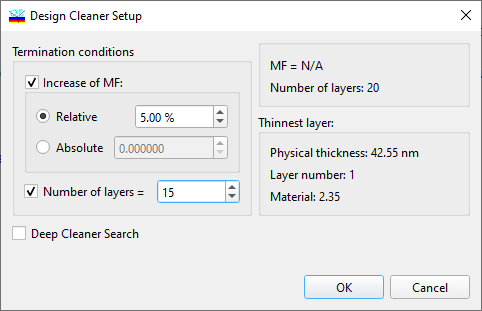

Design Cleaning
Design Cleaning
Navigation: OptiLayer Menu Commands > Synthesis Menu >
Design Cleaning
` <de_sensitization.html>`__ ` <idh_menu_synthesis.html>`__ ` <idh_remove_thin_layers.html>`__
The Design Cleaner option is accessible from the Synthesis Menu. This option is intended for an automatic simplification of designs obtained by OptiLayer refinement and synthesis routines.
This option is intended for the automatic simplification of designs obtained by OptiLayer refinement and synthesis routines.
The Design Cleaner allows the user to reduce the number of design layers by removing those layers that, when excluded from the design and followed by design reoptimization, only have a small effect on the merit function value. Since the removal of any layer generally leads to an increase in the merit function, the user is prompted to set the Allowed increase of MF (e.g., a 5 percent increase as in the example below).

The main stopping criterion for the Design Cleaner is the relative allowed increase in the merit function (MF) measured as a percentage. The other fields, such as the current value of the merit function (MF) and the number of layers, are provided for information purposes only. If absolute value of MF is checked, then the corresponding value should be expressed in absolute units. This is sometimes necessary for cases where the merit function (MF) is close to zero. An additional termination criterion (off by default) is the number of layers in the resulting design. Click OK to initiate the Design Cleaner procedure. The progress is graphically displayed in the Refinement window. Intermediate results are stored in the History storage and can be accessed at any time.